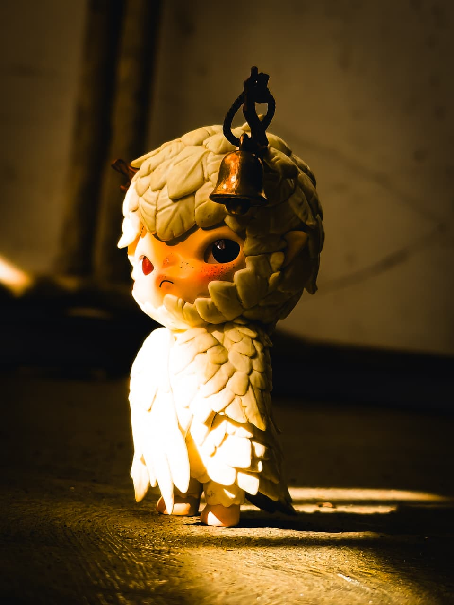
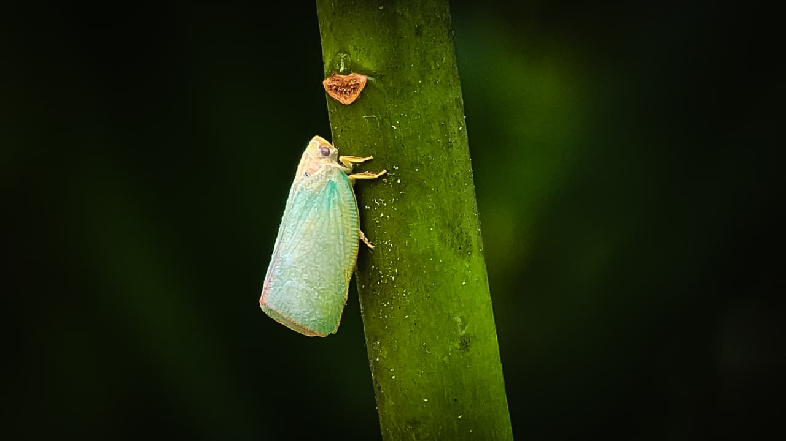
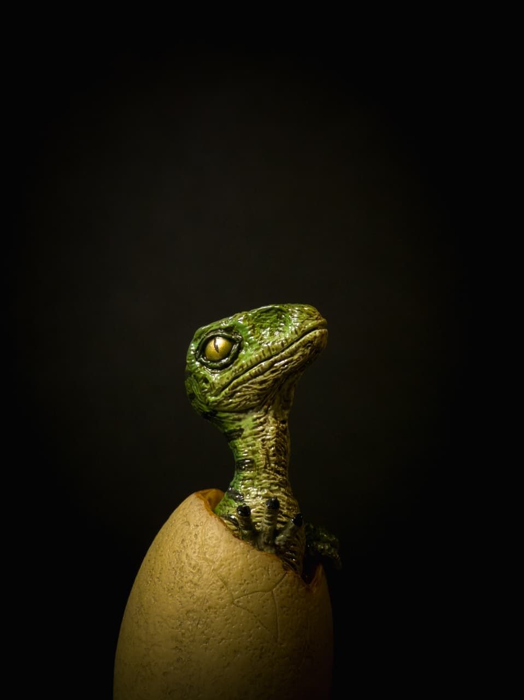
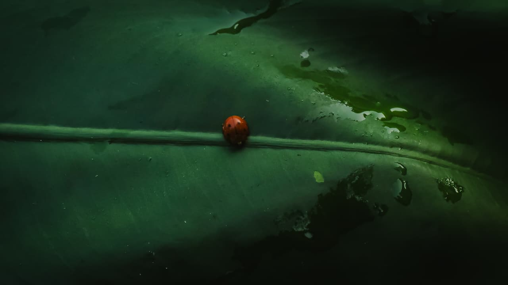
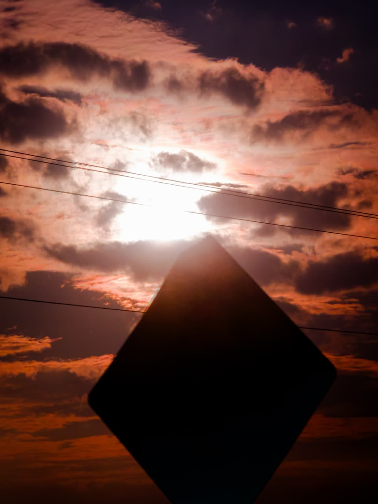
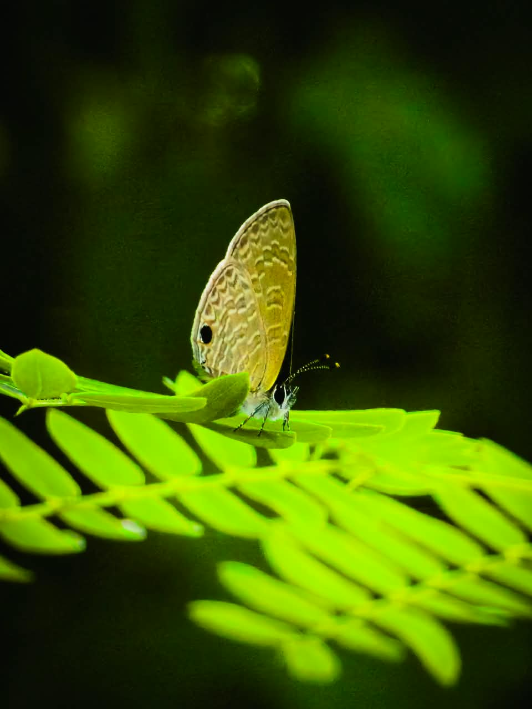
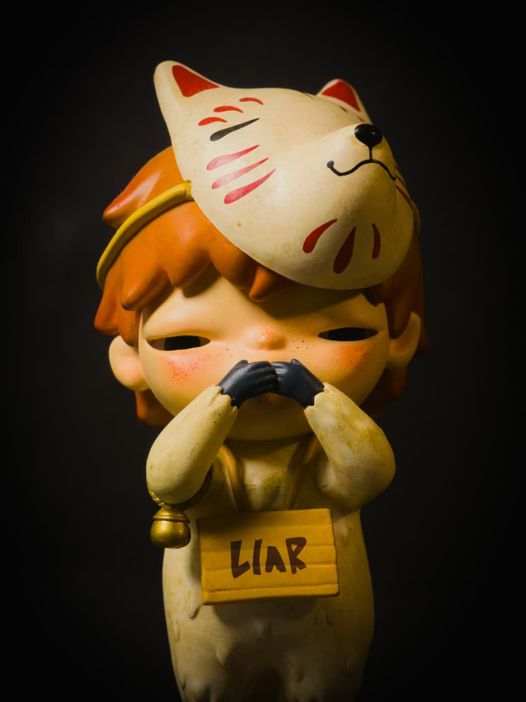
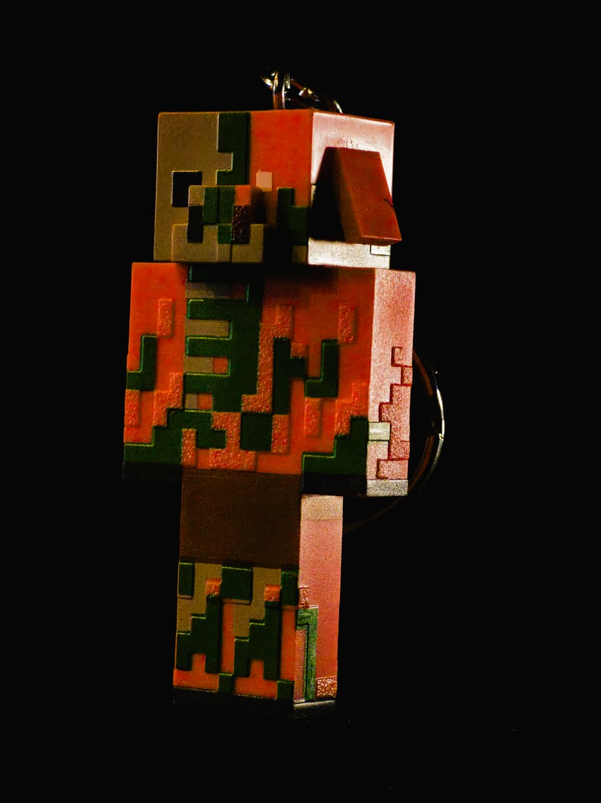

Seekor belalang yang sedang hinggap di kursi,foto ini saya ambil pada saat meminum segelas air di teras.Dan idak sengaja menemukan belalang ini

Foto figure hirono ini saya ambil di teras rumah,bentuk hirono ini menyerupai seekor burung dengan lonceng yang menggantung di kayu yang muncul di kepalanya

Foto kupu ini saya ambil di sebuah pekarangan.Kupu ini memiliki bentuk dan warna yang unik,dengan memiliki warna gradasi putih dan kebiruan

Foto baby dino ini saya ambil di kamar saya dengan latar belakang berwarna hitam,serta menggunakan lampu untuk menyoroti baby dinonya

Foto kepik ini saya ambil di sebuah daun lebar secara tidak sengaja,dan pada saat itu sehabis hujan sehingga ada tetesan air pada daunya

Foto rambu ini saya ambil saat melewati jalan tol,saat itu saya sedang dalam perjalanan mudik dan saya iseng utuk memfoto apa saja.Dan saya mendapatkan foto rambu ini setalah itu saya edit untuk colornya di lightroom

Foto kupu-kupu ini saya ambil di sebuah benteng terbengkalai di bawah jembatan madura,di sana banyak sekali ditumbuhi semak belukar dan pepohonan yang rimbun.Dan saya mendapatkan kupu-kupu ini sedang hinggap di daun

Foto hirono ini saya ambil di ruangan kamar saya,dengan latar belakang hitam.Dan hirono ini mengenakan bulu rubah dan terdapat topeng moncong rubah di kepalanya
Sebuah foto bulang di malam hari,foto ini saya ambil pada saat menikmati hawa dinginya malam. Dan saya terpesona dengan bulan diselubungi dengan awan di sekitarnya

Foto sebuah gantungan kunci karakter minecraft,foto ini saya ambil di studio foto kampus,saat pelajaran fotografi sedang berlangsung